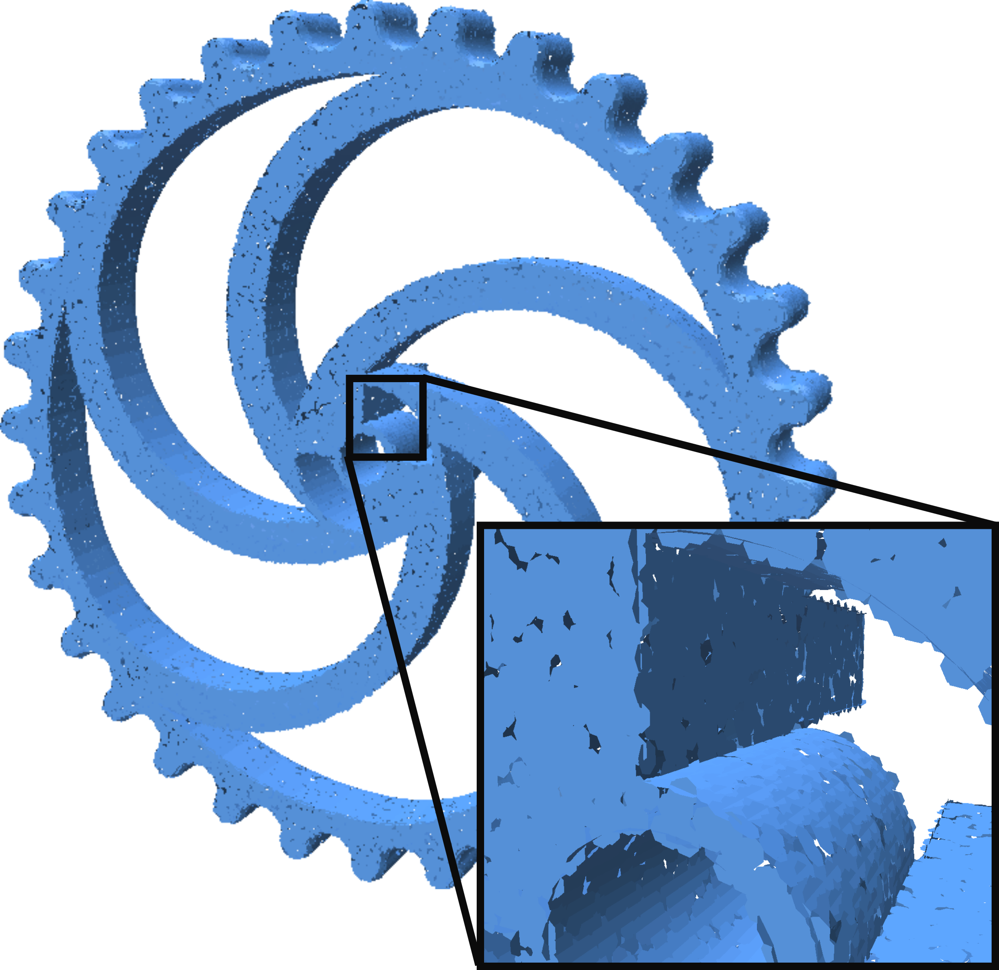

Generating Surfels from Point Clouds
A Surfel or SURFace ELement is a small, flat piece of geometry centered at a point and facing perpendicularly to that points normal. With dense enough points, surfels can be used as a surface representation. The figure below illustrates a surfel representation for a model.

Generating Surfel Geometry from an Oriented Point Cloud
Point Cloud Utils lets you easily generate surfel geometry from a point cloud
import numpy as np
import point_cloud_utils as pcu
# Load points and normals
p, n = pcu.load_mesh_vn("wheel.ply")
# Constant surfel radius of 0.33 per point
surfel_rad = np.ones(p.shape[0], dtype=p.dtype) * 0.33
# A triangle mesh representing surfel geometry
v, f = pcu.pointcloud_surfel_geometry(p, n, surfel_rad)
Ray Tracing Surfels
Point Cloud Utils lets you perform fast ray-surfel queries using intel Embree. The API is very similar to the Ray-Mesh Intersection API. There is a functional interface for one-off queries, and a class (RaySurfelIntersector) for repeated queries.
One off Ray-Surfel Intersection
You can compute one-off ray-surfel interesection queries with ray_surfel_intersection
import numpy as np
import point_cloud_utils as pcu
# Constant surfel radius of 0.33 per point.
surfel_rad = np.ones(p.shape[0], dtype=p.dtype) * 0.33
# Generate a raster grid of Rays looking down the +Z axis
x, y = np.mgrid[-0.5:0.5:32j, -0.5:0.5:32j]
ray_d = np.stack([x.flatten(), y.flatten(), np.ones_like(x.flatten())], axis=-1)
ray_d /= np.linalg.norm(ray_d, axis=-1, keepdims=True) # Normalize ray directions -- shape [N, 3]
# Rays originating at -Z looking down the Z-axis
ray_o = np.array([0.0, 0.0, -75.0])
ray_o = np.repeat(ray_o[None, :], ray_d.shape[0], axis=0) # Repeat the ray origin so there is one per ray -- shape [N, 3]
# pid is the id of each intersected point (or -1 for misses)
# t is the distance along each ray to the intersected surfel
pid, t = pcu.ray_surfel_intersection(p.astype(ray_o.dtype),
n.astype(ray_o.dtype),
ray_o, ray_d, surfel_rad)

Repeated Ray-Surfel Intersection with RaySurfelIntersector
You can do repeated ray-surfel intersection queries to the same geometry using the RaySurfelIntersector class:
import numpy as np
import point_cloud_utils as pcu
# Load points and normals
p, n = pcu.load_mesh_vn("wheel.ply")
# Constant surfel radius of 0.33 per point.
surfel_rad = np.ones(p.shape[0], dtype=p.dtype) * 0.33
# Generate a raster grid of Rays looking down the +Z axis
x, y = np.mgrid[-0.5:0.5:32j, -0.5:0.5:32j]
ray_d = np.stack([x.flatten(), y.flatten(), np.ones_like(x.flatten())], axis=-1)
ray_d /= np.linalg.norm(ray_d, axis=-1, keepdims=True) # Normalize ray directions -- shape [N, 3]
# Rays originating at -Z looking down the Z-axis
ray_o = np.array([0.0, 0.0, -75.0])
ray_o = np.repeat(ray_o[None, :], ray_d.shape[0], axis=0) # Repeat the ray origin so there is one per ray -- shape [N, 3]
# Generate new rays via a random rotation
random_rotation = np.linalg.svd(np.random.randn(3, 3))[0]
ray_o2 = np.ascontiguousarray((random_rotation @ ray_o.T).T)
ray_d2 = np.ascontiguousarray((random_rotation @ ray_d.T).T)
intersector = pcu.RaySurfelIntersetor(p, n, surfel_rad)
# pid is the id of each intersected point (or -1 for misses)
# t is the distance along each ray to the intersected surfel
pid, t = isect.intersect_rays(ray_o, ray_d)
# pid2 is the id of each intersected point (or -1 for misses)
# t2 is the distance along each ray to the intersected surfel
pid2, t2 = isect.intersect_rays(ray_o2, ray_d2)